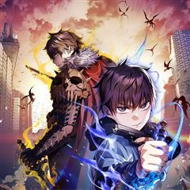
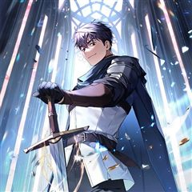
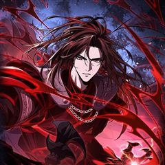
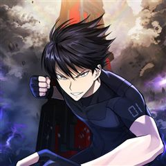
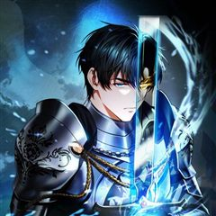

SSS급 죽어야 사는 헌터 같은 웹툰 추천

SSS급 죽어야 사는 헌터 · 네이다 / Bill K / 신노아
SSS급 죽어야 사는 헌터 재밌게 봤다면 이 웹툰들도 좋아할 거예요. 같은 장르이면서 눈물샘자극, 회귀, 학원물 같은 요소가 겹치는 작품을, 겹치는 요소가 많은 순서로 20개 골랐어요.
2026-10-04 기준 · 네이버웹툰·카카오웹툰·레진코믹스 · 성인 작품 제외
내 취향으로 직접 골라 추천받기 →-
1
 카카오웹툰
카카오웹툰덕혜옹주를 도와줘
여고생 현민, 100년 전 귀족 여학교로 떨어졌다. 정치 싸움과 노골적 차별이 난무하는 그곳에서 그녀의 임무는 단 하나, 한 소녀의 존엄과 마음을 지켜내는 것!
눈물샘자극회귀판타지카카오웹툰에서 보기 → -
2
 카카오웹툰
카카오웹툰만렙 영웅님께서 귀환하신다!
힘없는 골방왕자 데이비, 혼수상태에서 영혼이 빠져나온 그가 도착한 곳은 영웅들의 혼이 모인 거대한 회랑. 천년동안 굴려진, 그가 만렙 영웅님이 되어 귀환하셨다! 기다려라, 모두 제대로 상대해주마! 데이비의 통쾌한 복수극과 왕궁생활기가 지금 시작됩니다!
회귀학원물판타지카카오웹툰에서 보기 → -
3
 카카오웹툰
카카오웹툰마존현세강림기
첫 번째 삶. 불의의 사고로 가족과 두 다리를 잃고 스스로 목숨을 끊었다. 두 번째 삶. 중원에서 적천마존이라는 명성을 얻었지만 가장 신뢰하던 이에게 배신당해 죽게 됐다. 그리고 맞게 된 세 번째 삶. 다시 돌아온 현대에서 강진호 자신은 평범한 삶을…
회귀학원물판타지카카오웹툰에서 보기 → -
4
 카카오웹툰
카카오웹툰회귀검가의 서자가 사는 법
강자존의 가문 라그나르의 서자 테오, 죽도록 노력했지만 재능이 부족하여 혈통의 사슬을 끊지 못하고 결국 왕좌경쟁에 밀려난다. 하지만 힘없는 서자 임에도 형제들은 테오를 제거하려 하였고 자신을 가르쳤던 스승에게 마저 배신당한 테오는 모든걸 잃어버리고…
회귀학원물판타지카카오웹툰에서 보기 → -
5

카카오웹툰리라이프 플레이어
<언데드(Undead)> 노은하. 죽기 위해 살고, 죽지 못해 살았다. 가족을 잃고, 마음의 문을 닫고, 그저 몬스터에 대한 증오를 불태우다 죽고 싶었다. 인류가 공략 불가능하다고 판단한 <심연의 던전> 최심부에서 생을 마감하기 직전에 일어난 회귀.…
회귀학원물판타지카카오웹툰에서 보기 → -
6

카카오웹툰회귀한 마왕은 착하게 산다
마왕 지크 모어, 다음 생에는 부디 착한 일을 하는 사람이 되도록 하라!" 힘의 ‘마왕’ 지크는 용사의 외침을 끝으로 최후를 맞이한다. 그리고 눈을 뜨니 마왕이 되기 전 모습인 지크 스틸월로 돌아와 있었다. 다시 얻은 삶에서는 스틸월의 후계자도, 마…
회귀학원물판타지카카오웹툰에서 보기 → -
7

카카오웹툰뱀파이어 로드로 사는 법
반년간의 도주 생활 끝에 결국 성기사의 명성을 위한 제물로 살해당한 뱀파이어 유진. 후회 속에서 삶을 마감한 그에게 회귀라는 기회가 찾아왔다. “절대로 또 그렇게 죽진 않을 거다. 정말 과거로 돌아온 거라면, 무슨 수를 써서라도……. 두 번 다시 후…
회귀학원물판타지카카오웹툰에서 보기 → -
8
 카카오웹툰
카카오웹툰재능만렙 플레이어
검사 결과지를 받아들었다. [재능 없음] 오늘따라 '재능 없음'이라는 글자가 좀 아려왔다. 내가 노력이 부족했던 걸까. 아니면 재능이 없는 걸까. 그도 아니면 둘 다 없는 걸까. 이렇게 살고 있는 건 내 탓일까. 아니면 사회의 탓일까. 하루가 지났다…
회귀학원물판타지카카오웹툰에서 보기 → -
9

카카오웹툰회귀자도 못 깬 탑 등반합니다
술 마시다 정신을 잃었던 친구가 대뜸 이상한 말을 했다. “수혁아, 나 회귀했다.” “회귀?” “그래, 과거로 돌아왔다고.” “미쳤냐?” “네가 인류의 유일한 희망이야.” 그리고 탑으로 끌려왔지만... 상관없다! 회귀자? 탑? 시련? 그게 뭐든, 빌…
회귀학원물판타지카카오웹툰에서 보기 → -
10

카카오웹툰멸망한 왕국의 3왕자가 회귀했다
브리올 왕국의 망나니 3왕자 '유리'는 왕국이 멸망하는 최후의 순간, 혼자서만 도망쳐 목숨을 부지하게 된다. 후회와 죄책감으로 방황하던 유리는 끝내 죽음을 맞이하고, 다시 눈을 떠보니 익숙한 아버지의 얼굴이…? 왕과 왕자가 나란히 지옥으로 왔다고 생…
회귀학원물판타지카카오웹툰에서 보기 → -
11

-
12
 카카오웹툰
카카오웹툰무지개다리 파수꾼
돈과 성공만을 전부로 알던 유명 수의사 이한철. 그는 어느 날 사고 이후, 동물들의 목소리를 들을 수 있게 된다. 그렇게 동물 병원을 찾은 여러 동물들의 이야기를 듣던 어느 날, 길에서 만난 강아지 밍구의 살려달라는 목소리를 듣게 되는데.. 동물의…
눈물샘자극판타지카카오웹툰에서 보기 → · 무지개다리 파수꾼 같은 웹툰 → -
13
 카카오웹툰
카카오웹툰쌍갑포차
예상치 못한 시간, 예상치 못한 장소에 나타나는 쌍갑포차! 쌍갑포차를 운영하는 월주는 과연 누구일까? 쌍갑포차에 찾아오는 다양한 손님들의 감동적인 이야기! 한국 전통 신화 이승과 저승을, 꿈의 세계 그승과 함께 재창조한 세계관으로, 덤덤하게 써 내려…
눈물샘자극판타지카카오웹툰에서 보기 → · 쌍갑포차 같은 웹툰 → -
14
 카카오웹툰
카카오웹툰0살부터 슈퍼스타
엘프, 요정, 슬라임, 선물상자, 마왕 등 수천 번의 환생에 이어 몇 번째인지도 모를 새로운 삶. 인간 아기로 태어난 나 이서준! 내가 살아온 기억들이 동화처럼 남아 있는 생의 도서관 속에서 가장 간절히 원했던 꿈이 있는 전생을 보게 된다. 거기다…
눈물샘자극판타지카카오웹툰에서 보기 → · 0살부터 슈퍼스타 같은 웹툰 → -
15
 카카오웹툰
카카오웹툰닥터 최태수
대학병원의 가장 말단 의사, 걸어다니는 깡통― 인턴. 하루하루, 인턴으로서의 고된 나날을 보내던 최태수는 우연히 세계최정상의 흉부외과의사인 '리처드 카프레네'의 임종을 지키게 된다. 이때, 놀랍게도 카프레네의 모든 의학지식이 고스란히 최태수에게 전이…
눈물샘자극판타지카카오웹툰에서 보기 → -
16
 카카오웹툰
카카오웹툰기적의 물리치료사
물리치료사 이기적. 센터는 망하고, 여자친구에게는 차이고...! 되는 것 하나 없는 날, 떨어지는 별을 맞고 나서 상태창이 보이기 시작했다?! 최고의 물리치료사로 성장하는 이기적의 이야기!
눈물샘자극판타지카카오웹툰에서 보기 → -
17
 카카오웹툰
카카오웹툰공작님, 회개해주세요!
[금쪽같은 최종보스의 보좌관이 되었다!] 소설 속 최종보스의 보좌관이 되었다. 최종보스는 결국 죽게 되지만, 세상은 최종보스의 손에 개판이 된다. 그렇다면, 애초에 최종보스가 엇나가지 않으면 되잖아? 위태위태한 예비 최종보스를 고쳐 보자.
눈물샘자극판타지카카오웹툰에서 보기 → -
18
 카카오웹툰
카카오웹툰아역부터 월드스타!
악마적인 재능으로 연기하는 소년. 바이올린에 미쳐 살았던 남자. 불완전했던 두 영혼이 하나가 되었다. 병원을 나온 천재 소년, 이도현의 월드스타 성장기!
눈물샘자극판타지카카오웹툰에서 보기 → -
19
 네이버웹툰
네이버웹툰내가 키운 S급들
F급 헌터. 그것도 잘나가는 S급 동생 발목이나 잡는 쓸모없고 찌질한 F급 형. 개판된 인생 대충 살다가 결국 동생 목숨까지 잡아먹고 회귀한 내게 주어진 칭호, '완벽한 양육자'. 그래, 이번에는 나대지 말고 얌전히 잘난놈들 뒷바라지나 해 주자. 라…
회귀판타지네이버웹툰에서 보기 → · 내가 키운 S급들 같은 웹툰 → -
20
 네이버웹툰
네이버웹툰신화급 귀속 아이템을 손에 넣었다
D급 무투계 레이더로 마법계 레이더들의 고기방패나 하며 별 볼 일 없이 살던 재현. 그러던 어느 날, 던전에서 우연히 "오딘의 눈" 이라는 최강의 귀속 아이템을 얻게 됐다. 신의 눈을 가진 자, 세계를 구할 신의 대적자의 운명을 개척하라!
회귀판타지네이버웹툰에서 보기 → · 신화급 귀속 아이템을 손에 넣었다 같은 웹툰 →